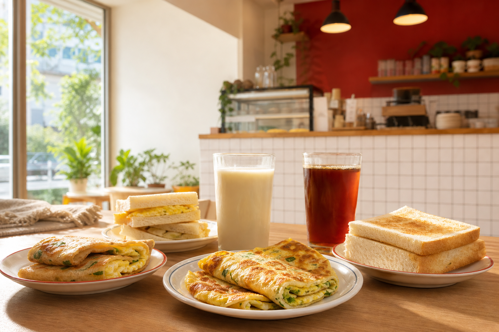

Local Breakfast
給附近居民與通勤客的日常早餐
網站規劃以 Google Maps 使用情境為核心：使用者通常想快速知道店名、餐點、營業狀態、位置、消費區間與是否值得順路購買。因此頁面把價目表、推薦餐點、取餐資訊和地圖入口放在最容易找到的位置。
Online Order
線上點餐使用微碧愛點餐
王媽媽早餐店的線上點餐使用外部平台「微碧愛點餐」。網站內提供菜單與價格瀏覽，正式下單請前往店家的 iding.tw 頁面完成。
Popular Picks
依地圖搜尋情境規劃的推薦
快速外帶組
蛋餅加紅茶，適合上班上課前順路買。
飽足早餐組
豬排吐司搭配薯餅，主餐份量更完整。
台式經典組
蘿蔔糕加豆漿，保留傳統早餐店味道。
Map Review Focus
店家介紹與口碑
王媽媽早餐店位於台北，是一家致力於提供精緻早餐和早午餐的餐廳，評價為 4.5 星。無論是首次造訪還是老顧客，都可以在台北品嚐到豐富多樣的早餐和早午餐美食。
親切招呼
以「媽媽味」和熟客感作為網站語氣，讓第一次到店的人也容易建立信任。
出餐效率
早餐時段使用者重視速度，因此點餐區強調外帶、預先估價與快速選餐。
附近好找
把 Google Maps 按鈕放在首頁與位置區，符合使用者查路線的習慣。
Visit
位置與到店資訊
地址
10491 台北市中山區中原街 19 號
營業時間
| 星期一 | 06:00-13:00 |
|---|---|
| 星期二 | 06:00-13:00 |
| 星期三 | 06:00-13:00 |
| 星期四 | 06:00-13:00 |
| 星期五 | 06:00-13:00 |
| 星期六 | 07:00-13:30 |
| 星期日 | 07:00-13:30 |
消費資訊
平均每人 $1-200。早餐尖峰時段建議先確認路線與營業狀態，再前往取餐。